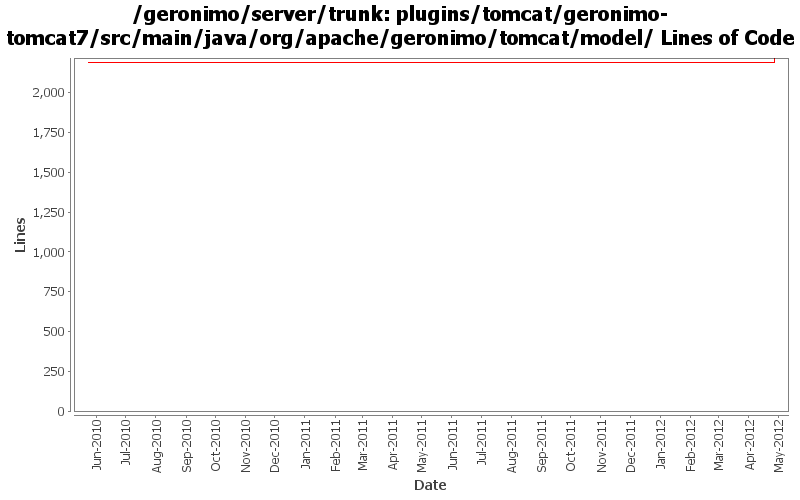

[root]/plugins/tomcat/geronimo-tomcat7/src/main/java/org/apache/geronimo/tomcat/model

| Author | Changes | Lines of Code | Lines per Change |
|---|---|---|---|
| Totals | 15 (100.0%) | 40 (100.0%) | 2.6 |
| xiaming | 1 (6.7%) | 26 (65.0%) | 26.0 |
| xuhaihong | 13 (86.7%) | 13 (32.5%) | 1.0 |
| djencks | 1 (6.7%) | 1 (2.5%) | 1.0 |
GERONIMO-6339 Update ConnectorType model class to include the new property maxParameterCount for trunk
26 lines of code changed in 1 file:
GERONIMO-5432 Minor correction to my last commit
2 lines of code changed in 1 file:
GERONIMO-5432 Encrypt password values in server.xml (Based on the patch from Xiao Yi)
0 lines of code changed in 2 files:
GERONIMO-5863 Web access log of Tomcat is not generated (Patch from Fang ShengHao)
6 lines of code changed in 1 file:
GERONIMO-5190 use openejb-jee jaxb tree for spec dds
1 lines of code changed in 1 file:
a. Use Map.Entry for the loop
b. Remove some excess cast action
5 lines of code changed in 7 files:
Update integration codes due to recent changes of Tomcat trunk
1. Set meta-complete to disable Tomcat's annotation scanning
2. Disable XML validation by Tomcat
0 lines of code changed in 2 files: